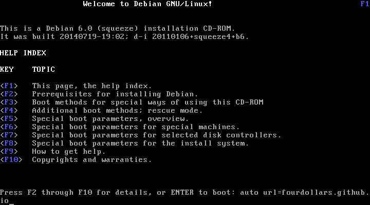
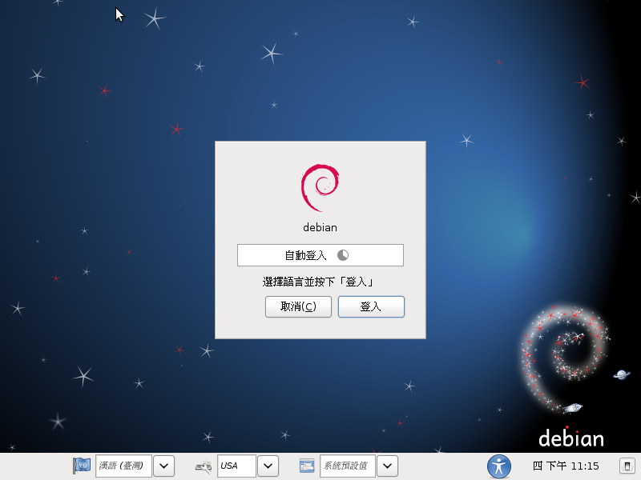
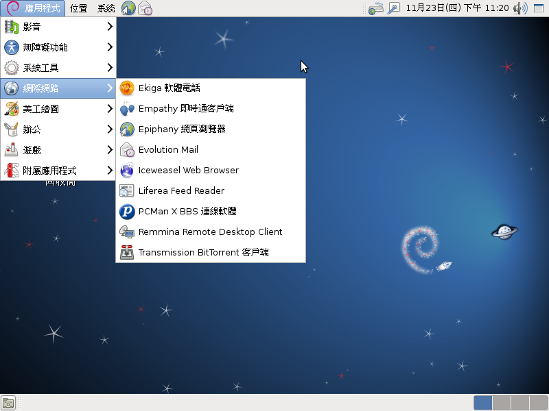
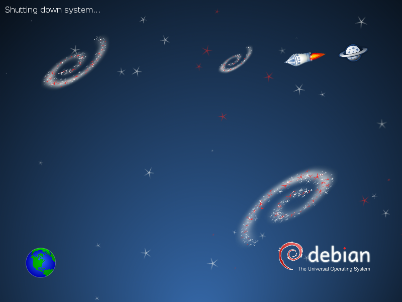

首先去下載 debian-6.0.9-i386-businesscard.iso (46M) 回來，然後再準備一個 USB Stick 接上電腦，如果 mount 在 Linux 系統上的話記得先 umount 掉， 以 root 權限執行以下命令 (這裡假設 USB Stick 的 Device Node 位於 /dev/sdc)
# cat debian-6.0.9-i386-businesscard.iso > /dev/sdc這樣就可以製作出可開機安裝 Debian 6.0 的 USB Stick，沒錯就是這樣製作的， 這是 Debian 6.0 以後的新功能 hybrid CD/DVD image 不過只有在 i386/amd64 上面有作用。
現在這隻 USB Stick 可以接上任何可以使用 USB Stick 開機的電腦上開機就會看到：
選擇 Help 之後
輸入
auto url=fourdollars.github.io
然後就是等 Debian 6.0 自動安裝完就會自動關機，這樣就把 Debian 6.0 安裝好了。
GRUB 的畫面
開機動畫
進入 GDM 了
輸入預設的密碼
debian

進入安裝好的 GNOME 桌面環境
關機時也會有關機動畫
這個環境是按照 $4 個人的喜好所打造的，所以不一定會符合所有人的使用習慣， 像是 $4 喜歡使用酷音裡面的單純注音模式，不喜歡有 3D 桌面效果， 中文字型喜歡用 AR PL UMing 字型，英文喜歡使用 Droid 字型， 加入了 squeeze-backports 上面的 Iceweasel (Firefox) 跟 LibreOffice。
想要打造自己的 Debian 6.0 自動化安裝可以參考官方文件 Appendix B. Automating the installation using preseeding
另外弄了一個半自動的安裝，讓使用者可以自己決定帳號密碼跟分割磁區。
auto url=http://fourdollars.github.io/d-i/squeeze/manual.cfg